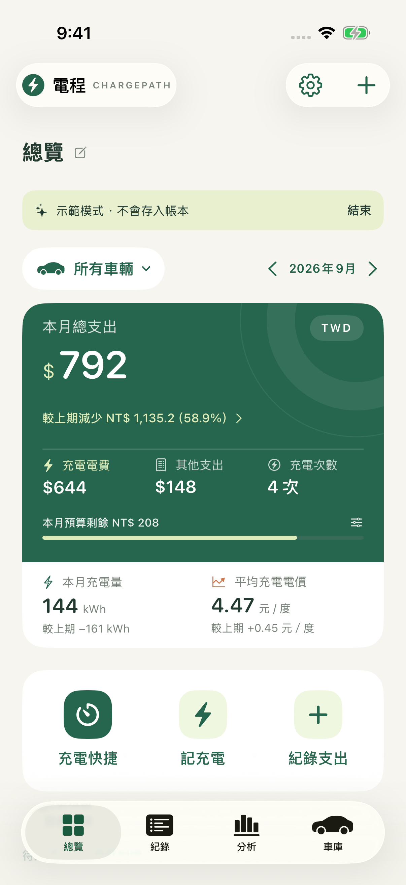

YOUR EVERYDAY EV COMPANION
讓每一段路，
都心裡有數。
電程 Dency 是一款專為電動車生活打造的記帳 App，讓充電與用車花費的紀錄變得簡單直覺，陪你輕鬆掌握日常開銷。
專為 iPhone 設計 · 免費下載，提供 App 內購買
- 充電記帳
- 用車花費
- 每公里成本

01 開始記帳
第一次使用，要從哪裡開始？
不需註冊電程帳號。開啟 App 後先新增愛車，再從總覽選擇「記充電」或「紀錄支出」。也可以先體驗示範資料，熟悉畫面；示範資料不會寫入正式帳本。
充電紀錄先填入實付金額與充電度數，其餘細節可依需要補充。免費充電可填 0 元。
截圖辨識的金額或度數不正確，怎麼辦？
請使用清楚、完整，且包含日期、度數與金額的帳單截圖。辨識完成後先核對，再帶入表單；未辨識或不正確的欄位可手動補填、修改。
截圖辨識在裝置上處理，結果仍需要你確認。若偵測到與帳本不同的幣別，金額會留待手動確認，不會自動換匯。
為什麼還看不到每公里成本？
同一台車至少需要兩筆不同時間、有效且遞增的里程讀數。電程以這段里程差，以及起點之後至終點當下的已入帳支出計算成本。
里程倒退、同時間讀數衝突或距離為零時，會暫停該車計算。請核對里程與日期；這個數值是用車支出成本，並非車輛耗電效率。
02 計時與快捷
停車計時怎麼開始？離開 App 會停止嗎？
從總覽點選「停車計時」，使用已選定的車輛開始；有多台車且未選定時，先選擇車輛。若已有未結算的停車，會開啟同一筆紀錄。
返回主畫面或鎖定螢幕不會停止計時。離場時按「停止計時並結算」，確認實付金額後才入帳。費率試算供參考，請以停車場實際收費為準。
動態島或鎖定畫面沒有顯示計時？ Pro
請確認 Pro 訂閱有效，並在電程「設定與備份」啟用對應的充電／停車即時動態，也確認 iOS 允許電程使用即時動態。開始計時後，離開 App 或鎖定螢幕查看。
動態島需支援的 iPhone 機型；顯示及更新受 iOS 管理。即時動態最長顯示 8 小時，之後仍可回到 App 查看與結算原紀錄。停車費試算不保證在背景即時更新。
充電計時依你操作的開始、結束時間記錄，不會自動偵測車輛是否充飽。
如何用 Siri 開啟充電紀錄？ Pro
先開啟電程並新增車輛，確認 Pro 訂閱有效。可對 Siri 說：
「用電程新增充電紀錄」
系統會開啟新增充電表單，由你填入度數與費用，再確認儲存。也可以在「捷徑」App 中查看電程提供的動作。若未顯示，請先重新開啟電程及捷徑，並檢查 Siri 的 App 語言設定。
如何加入小工具？花費為什麼沒有立即更新？ Pro
確認 Pro 訂閱有效，安裝並開啟電程一次後，在 iPhone 主畫面長按空白處，選擇加入小工具並搜尋「電程」。
小工具顯示所有車輛本月已入帳花費與整體預算，未完成草稿不列入。更新由 iOS 排程；若資料尚未更新，可先開啟電程確認紀錄已儲存，再回到主畫面查看。
03 共享與資料
如何邀請家人一起記帳？ Pro
在車庫選擇車輛，開啟「共同管理」，設定顯示名稱並邀請指定成員。參與者需各自具備有效 Pro 訂閱、登入各自的 iCloud 帳號並安裝電程。
共享包含所選車輛及相關充電、支出與收據。其他車輛、個人草稿與排程不會一起共享。這是電程的車輛共同管理功能，不等於 Apple 訂閱家人共享。
App 開啟時會定期同步；離線記錄在恢復連線後再同步。啟用車輛共同管理後，整份帳本的 iCloud 同步與備份會暫停，仍可匯出本機完整備份。
換手機前，怎麼備份帳本？
在「設定與備份」匯出完整 JSON 備份，並將檔案存到你能存取的安全位置。換機時使用完整備份還原，可保留帳本及相關附件。
CSV 適合試算表整理，不是完整換機備份。Pro 另提供 iCloud 同步與雲端備份；使用前請確認 Apple 帳號、網路及 App 內的同步狀態。
不小心刪除紀錄，可以復原嗎？
刪除的帳本紀錄會在「最近刪除」保留 30 天，可從設定進入並復原。已永久刪除或超過保留期限的紀錄，無法從最近刪除復原。
請先備份再移除 App。重新安裝不會自動找回只存在原裝置、且未備份的資料。
04 Pro 訂閱
免費版和 Pro 有什麼差別？
免費版保留第一台車記帳、本機匯出與還原。Pro 月訂閱與年訂閱解鎖相同功能：多車紀錄、共同管理、Siri 捷徑與小工具、即時動態，以及 iCloud 同步與雲端備份。
售價與方案以 App 內及 App Store 顯示為準。
已訂閱，卻沒有解鎖 Pro？
確認裝置的 App Store 使用原購買訂閱的 Apple 帳號，並確認網路連線。在電程 Pro 頁面選擇「回復購買」，恢復仍有效的訂閱權限。
若仍無法使用，請來信附上 App 版本、iOS 版本及錯誤畫面。請勿提供 Apple 帳號密碼或完整付款資料。
如何取消訂閱？到期後紀錄會消失嗎？
Pro 為自動續訂訂閱。可到 iPhone「設定 → Apple 帳號 → 訂閱項目」管理，或使用下方連結。取消續訂後，在剩餘有效期間仍可使用 Pro。
訂閱到期不會刪除本機帳本，既有資料仍可查看、匯出與還原；多車新增紀錄及其他 Pro 功能會暫停。
管理 Apple 訂閱 ↗ · 向 Apple 提出退款申請 ↗
退款由 Apple 審核與處理。
WE’RE HERE TO HELP
用車路上，
有問題就找我們。
從第一筆充電，到每天的停車與用車花費。
操作上有疑問，或有想分享的建議，都歡迎來信。
LET’S SORT IT OUT
多一點資訊，
更容易找到原因。
來信時提供以下資訊，能幫助我們了解狀況。
- 你遇到的問題，以及操作步驟
- 預期的結果，以及實際發生的情況
- 電程版本、iOS 版本與 iPhone 機型
- 必要時附上已遮蔽個人資料的截圖
請勿寄送密碼、完整信用卡資料或不必要的完整帳本。
寄信至 amonstudioapp@gmail.com ↗